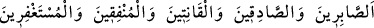

16. (Bu nîmetler) “Ey Rabbimiz! Îmân ettik; bizim günahlarımızı bağışla, bizi
ateş azabından koru!” diyenler;
Onlar takvâya eren ve Allah tarafından büyük ve ebedî ikrâmlara nâil olan kullardır ki
şöyle derler: “Ey rabbımız! Biz şüphesiz îman ettik.” Seni ve peygamberini tasdik
ettik. “Bizim günahlarımızı mağfiret et ve bizi cehennem azabından koru.” Yani bizim
sadece îman etmemiz dolayısıyla bize mağfiret et ve cehennem azabından koru. Bu
îfâdede; sadece îman etmekle mağfirete ve cehennem azabından kurtulmaya hak
kazanılacağına delâlet vardır.
17. Sabreden, dürüst olan, huzurda boyun büken, hayra harcayan ve seher
vaktinde Allah’dan bağış dileyenler (içindir.)
Yani takvâya erenler sabredicilerdir; ibâdetlerin meşakkatlerine, uğradıkları
sıkıntılara ve zorluklara belâ ânında sabrederler. Onlar dürüst davranan sâdık
insanlardır. Sözlerinde, niyetlerinde, azîmetlerinde doğruluktan hiçbir zaman
ayrılmazlar. Allah’a itâat ederler, boyun eğerler. İbâdet ve tâatlerine kesintisiz,
usanmadan, bıkmadan devam ederler. Mallarını Allah yolunda harcarlar, seherlerde
Allah’dan mağfiret isterler, istiğfâr ederek devamlı O’na sığınırlar.
Bu sayılan özelliklerin aralarının “vav” ile ayrılarak ayrı ayrı sayılması, bunların her
birinin müstakil medih olduğuna işarettir. Aynı zamanda “takvâ sahiplerinin arasında
sabredenler ve sâdık olanların bulunduğuna delâlettir.
Sabır, “nefsi dînin mahzurlu gördüğü isteklerden tutmak, alıkoymak” demektir. Sabır
çeşitleri üç ana bölümde toplanır:
a- Tâatleri yerine getirmede sabır,
b- Mâsiyetlerden sakınmada sabır,
c- İstenmeyen şeylere; belâ ve musîbetlere sabır.
Peygamber Efendimiz (s.a.) şöyle buyurmuşlardır: “Bir musîbete sabredene üç yüz
derece vardır. Her iki derecenin arası yerle gök arası gibidir. Tâate sabredene altı
yüz derece vardır. Her iki derecenin arası yerle gök arası gibidir. Mâsiyete sabreden
için dokuz yüz derece vardır. Her iki derecenin arası Arş ile Kürsî’nin arası
kadardır.”[11]
Sıdk (doğruluk) sözde olur o da; yalandan sakınmaktır. Doğruluk fiil ve harekette olur